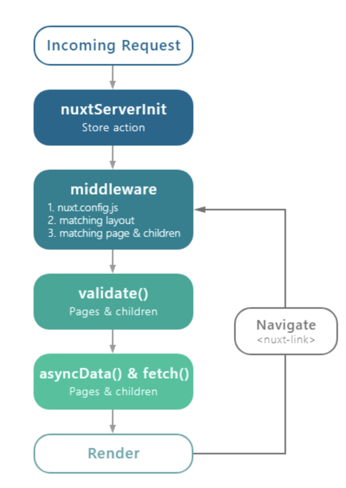

Create Vue.js + SSR demo with Nuxt
利用Nuxt创建一个Vue.js + SSR的Demo
什么是Nuxt
Nuxt就是一个通用的Vue.js的框架。再直白点说，就是Vue.js原来是开发SPA（单页应用）的，但是随着技术的普及，很多人想用Vue开发多页应用，并在服务端完成渲染。这时候就出现了Nuxt.js这个框架，她简化了SSR的开发难度。还可以直接用命令把我们制作的vue项目生成为静态html。
什么是SSR和SPA
Nuxt.js最常用于的是SSR – Server Side Rendering(服务端渲染)，也就是在服务器端上把我们的Vue文件渲染成html，然后再返回给浏览器。
Vue写出来的大都是SPA – Single Page Application(单页应用)。
把所有东西加载完之后再在浏览器打开。但是对SEO搜索引擎不友好。
SSR优点：
- 更好的 SEO，由于搜索引擎爬虫抓取工具可以直接查看完全渲染的页面。
如果你的应用程序初始展示Loading菊花图，然后通过Ajax获取内容，抓取工具并不会等待异步完成后再行抓取页面内容。也就是说，如果SEO对你的站点至关重要，而你的页面又是异步获取内容，则你可能需要服务器端渲染(SSR)解决此问题。
- 更快的内容到达时间（首屏加载更快），因为服务端只需要返回渲染好的HTML，这部分代码量很小的，所以用户体验更好。
安装Nuxt并创建Hello World
1.安装vue-cli
1 | install vue-cli -g |
2.创建文件夹NuxtDemo
3.在文件夹下生成项目，并输入项目名称（尽量用小写），描述，作者。
1 | vue init nuxt/starter |
4.使用npm/yarn安装package.json里的dependencies里的包。
安装失败对时候可以删除node_modules之后再进行安装。
1 | npm install / yarn install |
5.启动Nuxt，修改Nuxt里的h1为Hello World
1 | npm run dev / yarn run dev |


接下来我们要了解一下目录结构及设定，并生成自己的页面。
生成的目录结构

assets:
资源文件，放置不需要webpack打包处理的资源文件，比如scss,图片，字体文件等等。
components:
组件。可以复用的组件。存放项目中的各种组件。
※只有在这个目录下的文件才能被称为组件。
layouts：
创建自定义的页面布局。页面都需要有一个布局，默认为 default.vue。它规定了一个页面如何布局页面。 可以在这个目录下创建全局页面的统一布局，或是错误页布局。如果需要在布局中渲染 pages 目录中的路由页面，需要在布局文件中加上
middleware：
中间件。放置自定义的中间件，会在加载组件之前调用。可以在页面中调用： middleware: ‘middlewareName’。
pages：
页面。一个 vue 文件即为一个页面。index.vue 为根页面。用于nuxt自动组织应用的路由及视图。Nuxt.js 框架读取该目录下所有的 .vue 文件并自动生成对应的路由配置。
- 若需要二级页面，则添加文件夹即可。
- 如果页面的名称类似于 id.vue （以 _ 开头），则为动态路由页面， 后为匹配的变量（params）。
- 若变量是必须的，则在文件夹下建立空文件 index.vue。更多的配置请移步至 官网。
plugins:
插件。用于组织那些需要在 根vue.js应用 实例化之前需要运行的 Javascript 插件。需要注意的是，在任何 Vue 组件的生命周期内， 只有 beforeCreate 和 created 这两个钩子方法会在 客户端和服务端均被调用。其他钩子方法仅在客户端被调用。 可以在这个目录中放置自定义插件，在根 Vue 对象实例化之前运行。例如，可以将项目中的埋点逻辑封装成一个插件，放置在这个目录中，并在 nuxt.config.js 中加载。
static:
静态文件。静态文件目录 static 用于存放应用的静态文件，此类文件不会被 Nuxt.js 调用 Webpack 进行构建编译处理。 放置不需要经过 webpack 打包的静态资源。如一些 js, css 库,图片,ico地址导航图标。服务器启动的时候，该目录下的文件会映射至应用的根路径 / 下。
store:
用于组织vuex状态管理。
nuxt.config.js:
nuxt.config.js 文件用于组织Nuxt.js 应用的个性化配置，以便覆盖默认配置。
Nuxt.js 的渲染流程
Nuxt.js 通过一系列构建于 Vue.js 之上的方法进行服务端渲染，具体流程如下:
1.调用 nuxtServerInit 方法
当请求打入时，最先调用的即是 nuxtServerInit 方法，可以通过这个方法预先将服务器的数据保存，如已登录的用户信息等。另外，这个方法中也可以执行异步操作，并等待数据解析后返回。
2.Middleware 层
经过第一步后，请求会进入 Middleware 层，在该层中有三步操作：
读取 nuxt.config.js 中全局 middleware 字段的配置，并调用相应的中间件方法 匹配并加载与请求相对应的 layout 调用 layout 和 page 的中间件方法
3.调用 validate 方法
在这一步可以对请求参数进行校验，或是对第一步中服务器下发的数据进行校验，如果校验失败，将抛出 404 页面。
4.调用 fetch 及 asyncData 方法
这两个方法都会在组件加载之前被调用，它们的职责各有不同， asyncData 用来异步的进行组件数据的初始化工作，而 fetch 方法偏重于异步获取数据后修改 Vuex 中的状态。
添加Page
Nuxt.js是使用了Vue-Router进行routing管理。当Vue.js制作SPA的时候也是使用了Vue-Router的。但是需要先写好component，然后在Vue-Router将URL和componeng进行配对设置。
Nuxt.js的话pages目录下已经放置了页面用的component。
page目录下如果放置了类似*.vue的文件的话，它就会自动进行routing的定义设定。
比如:
在page下新建一个index.vue文件和sample.vue文件。
/pages/index.vue
1 | <template> |
/pages/sample.vue
1 | <template> |
打开 http://localhost:3000 和 http://localhost:3000/sample 就可以看到以下画面了。


添加Layout
在component下添加layout组件
.Footer.vue
1 | <template> |
.Header.vue
1 | <template> |
.Sidebar.vue
1 | <template> |
在layout下创建twocolumns.vue作为自定义layout,并import Footer 和 Sidebar两个组件。最后export name为twocolumns
1 | <template> |
自定义的default.vue（所有页面默认引用的layout）里添加Header 和 Footer
1 | <template> |
在希望使用自定义的sample.vue里添加下面的代码来指定layout
1 | <script> |
可以看到在homepage是使用默认样式带着Header和Footer，但是sample页面使用来自定义layout，没有Header但是有sidebar。
top:
sample:

完成！